フィード投稿と資料生成AI
CanvaとChatGPTで投稿を"量産"する時短ワークフロー — Jun 2026
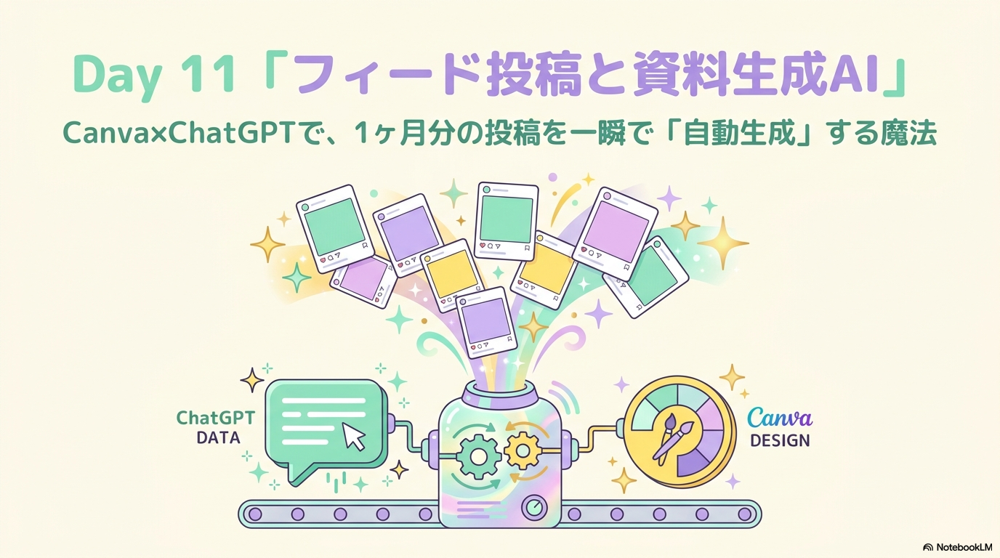
CanvaのAI一括作成機能とChatGPTを組み合わせ、投稿コンテンツを「自動化・量産」するワークフローの全体像を理解し、自分のアカウントに使えるCSV設計とデータバインドを1セット試せるようになる。
Canvaの「一括作成（Bulk Create）」機能で、テンプレートに大量データを流し込む仕組みを理解し、サイドバーから有効化できる
ChatGPTに「CSV形式で出力して」と指示するだけで、Canvaへ流し込める投稿用データの設計図（見出し・キャプション等）が作れるようになる
データバインドの3ステップ（インポート→接続→生成）を踏んで、複数デザインを一括で自動生成できる
Instagramの投稿作成において、毎回1枚ずつ手作業で画像や動画を編集するのは非常に時間がかかります。そこで強力な武器となるのが、Canvaに搭載されている「一括作成（Bulk Create）」機能です。
「一括作成」の定義：
あらかじめ用意したテキストや画像などのデータ一覧（CSVなど）を、1つのデザインテンプレートに流し込むことで、数十枚から数百枚の投稿デザインを一瞬で自動生成する機能です。
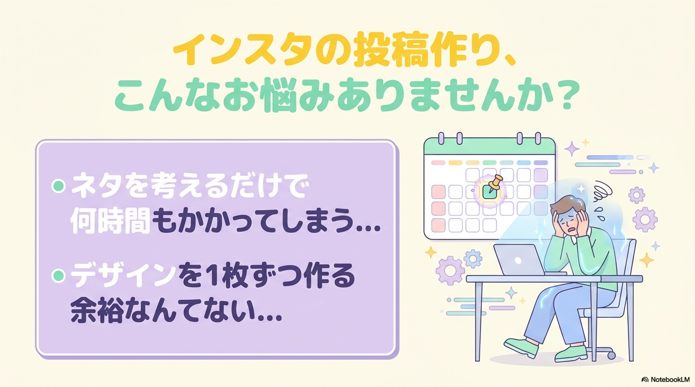
1つのデザインテンプレートに対して、複数のデータ行を「データの接続（データバインド）」させることで、以下のメリットが得られます。
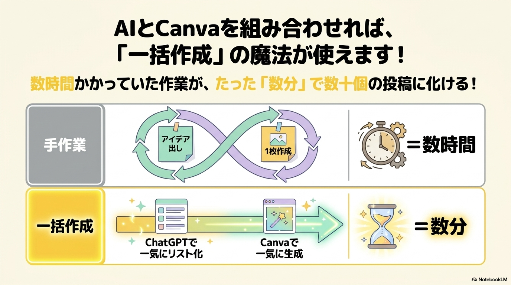
Canvaの編集画面を開き、左側にあるサイドバーのメニューから「アプリ」を選択します。
検索窓に 一括作成 と入力し、表示された「一括作成」アプリアイコンをクリックして有効化します。
有効化されると、左サイドバーの下部に「一括作成」のタブが追加され、いつでも呼び出せる状態になります。
アプリの追加自体は数クリックで完了します。一度有効化しておけば、サイドバーにアイコンが常駐するため、次回以降は検索する必要がなくなります。
アプリがサイドバーに見当たらない場合は、Canvaのバージョンアップやアカウントの種類（Pro版・無料版）にかかわらず、アプリ検索から「一括作成」と再入力すればいつでも呼び出せます。
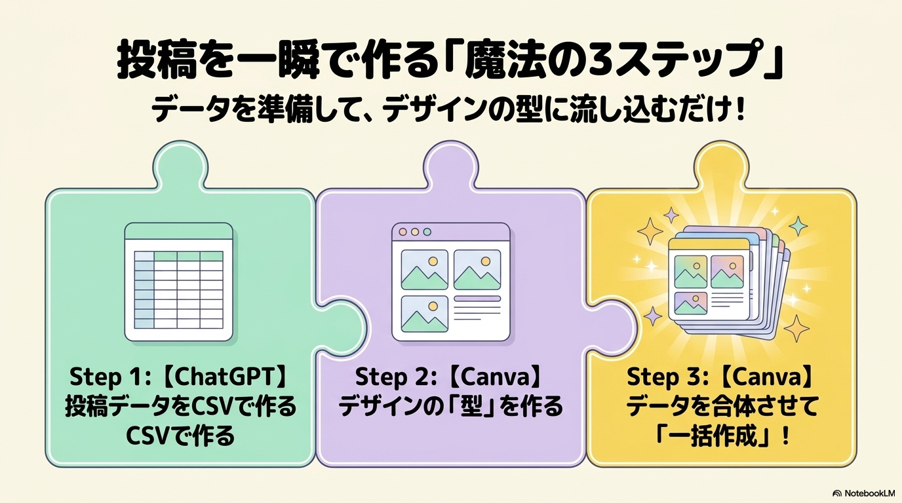
ツールを立ち上げると、「データを手動で入力」するか「CSVをアップロード」するかの選択画面になります。今回はChatGPTで作成したCSVデータをアップロードして量産する、最も効率的な手法を進めていきます。
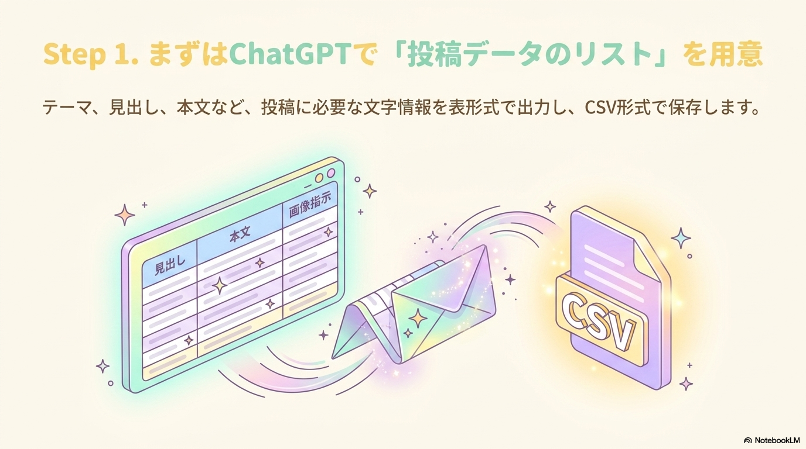
Canvaの一括作成機能は、スプレッドシートやExcelから出力されたCSV形式（カンマ区切りの表データ）を読み込んで動作します。
手動で1行ずつCanvaに入力することもできますが、ChatGPTに対して「表形式で出力して」と明確に指示することで、大量の投稿用テキスト素材を自動生成できます。これにより、アイデア出しから執筆までの時間を極限まで圧縮します。
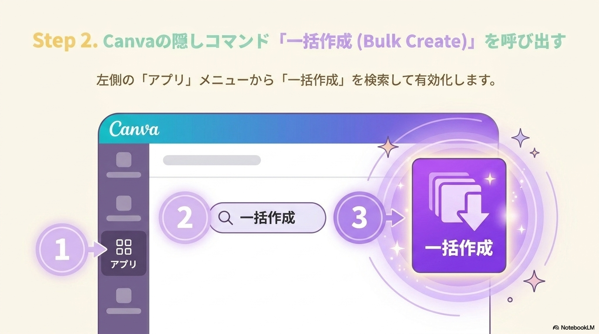
ChatGPTにプロンプトを投げる際、単に「投稿案を箇条書きして」と指示してはいけません。Canvaのテンプレート側にある各テキストボックス（タイトル、本文、等）に対応した「列（ヘッダー名）」を指示し、表（テーブル）形式で出力させることが必須です。
⚠️ 注意：列名がChatGPTの出力とCanva側で一致していないと、どの文字をどこに流し込むべきか判断できず、接続エラー（バインドエラー）になります。
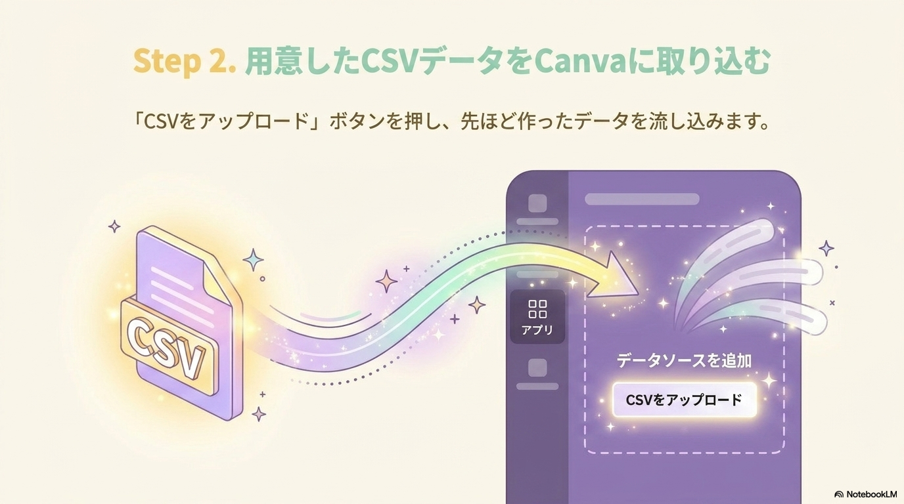
・アイデア：投稿の切り口やテーマ（管理用）
・見出し：画像内に配置する目を引くキャッチコピー
・キャプション：投稿本文（三位一体のキーワードを含む）
・画像プロンプト：AI画像生成に使用する詳細な指示文
「以下の条件で投稿データを10件、CSV形式の表で出力してください」と指示します。列名（ヘッダー）を指定し、ターゲットや発信のトーン＆マナーを明確に伝えることで、精度の高い文章が生成されます。
指定した列名に沿ってプロンプトを実行すると、ChatGPTはきれいに整理された表データを作成します。表のヘッダー（アイデア, 見出し, キャプション, 画像プロンプト）が正確に出力されていることを確認しましょう。
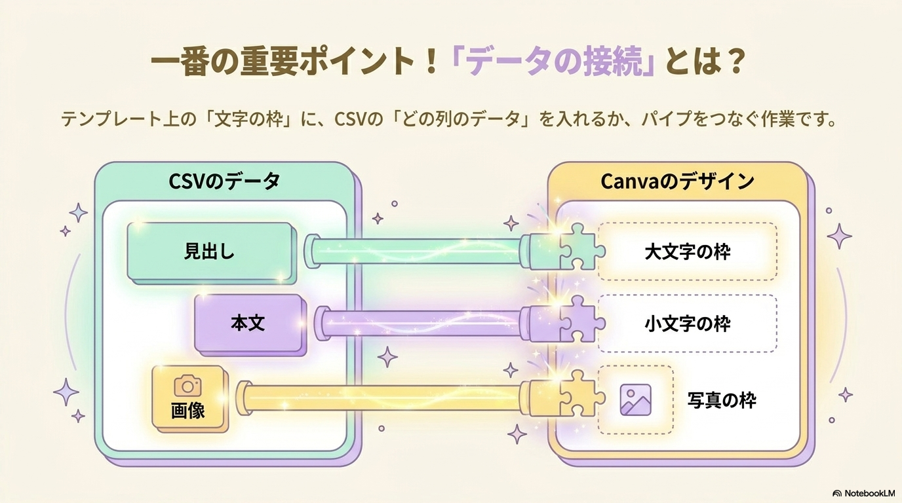
ChatGPTが出力した表データをコピーし、以下の手順でCSVファイルを作成します。
GoogleスプレッドシートからダウンロードしたCSVは自動的に「UTF-8」形式になるため、Canvaで読み込ませた際に日本語が文字化けするトラブルを防ぐことができます。
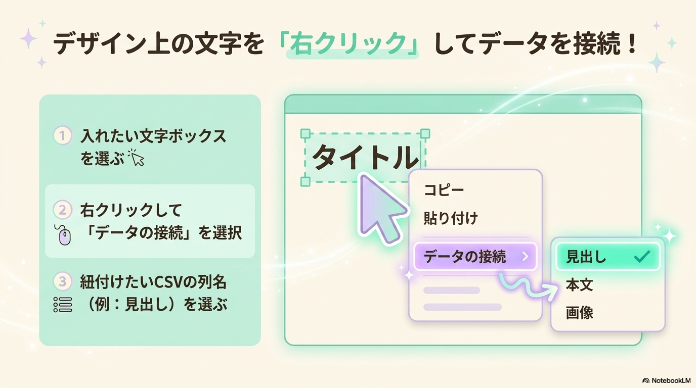
以下のプロンプトの[カッコ]内を自分の発信ジャンルに書き換えてChatGPTに入力してください。
以下の条件でInstagramの投稿アイデアを10件、CSV形式の表で作成してください。 列名: アイデア,見出し,キャプション,画像プロンプト 発信ジャンル: [例: 自宅で作る簡単本格パスタ] ターゲット: [例: 忙しいけれど美味しいものを食べたい共働き会社員] トーン: [例: 親しみやすく、分かりやすい解説口調]
作成したCSVファイルをCanvaに読み込ませ、デザインテンプレートの文字要素とCSVデータを紐付ける「データバインド（接続）」を行います。これにより、テンプレートに自動でデータが流し込まれる準備が整います。
サイドバーの「一括作成」メニューから「CSVをアップロード」を選択し、保存したファイルを選択します。アップロードが成功すると、CSVの列名（見出し、キャプション等）がバインド可能な変数として一覧表示されます。
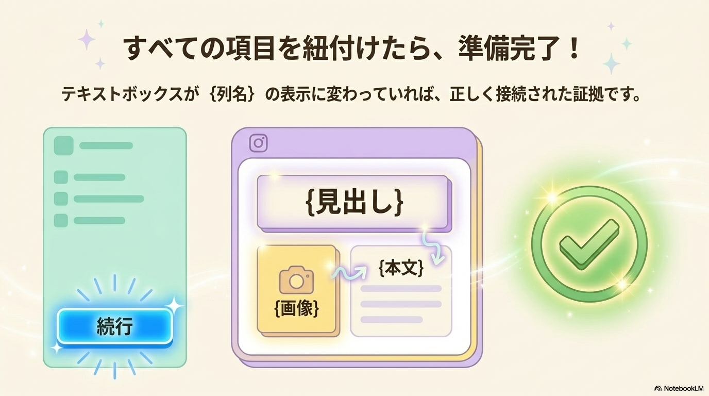
Canvaの一括作成メニューから「CSVをアップロード」を選択し、先ほど保存したCSVファイルをアップロードします。すると、アップロードした列名（見出し、キャプションなど）が画面に一覧表示されます。
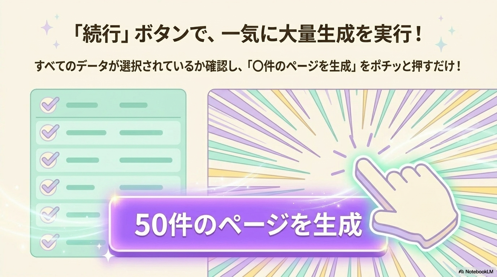
テンプレート上のテキストボックス（例：キャッチコピー用の文字枠）をクリックして選択し、右クリックメニューを開きます。
メニューから「データの接続」を選択し、表示されたCSVの列名（例: 「見出し」）をクリックします。
要素の周囲に {見出し} のように括弧で囲まれた変数が表示され、紫色のチェックマークが点灯すればバインド成功です。
紐付けが完了したら、一括作成パネルの「続行」をクリックします。生成したい行（投稿データ）にチェックが入っていることを確認し、「〇〇ページを生成」をクリックして自動生成を開始します。
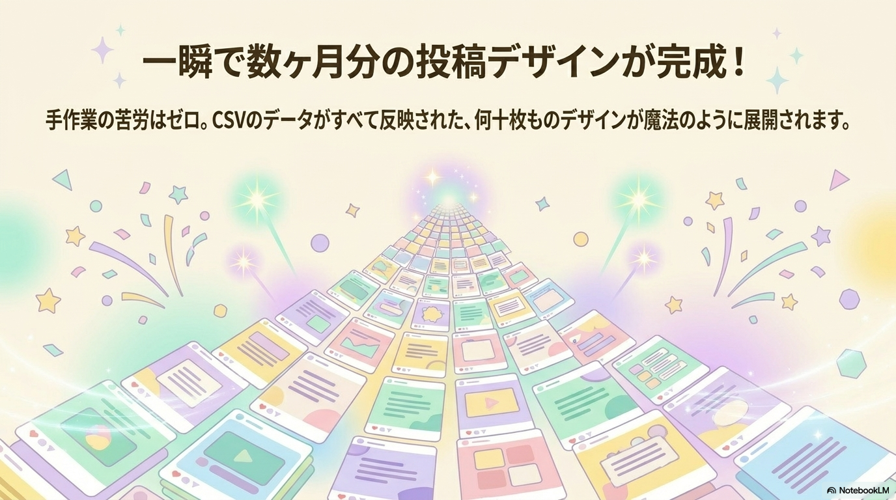
生成を実行すると、ブラウザの別タブで新しいデザインファイルが自動的に作成されます。そこには、CSVデータが1行ずつ流し込まれたデザインページが、全データ件数分一気に出来上がっています。
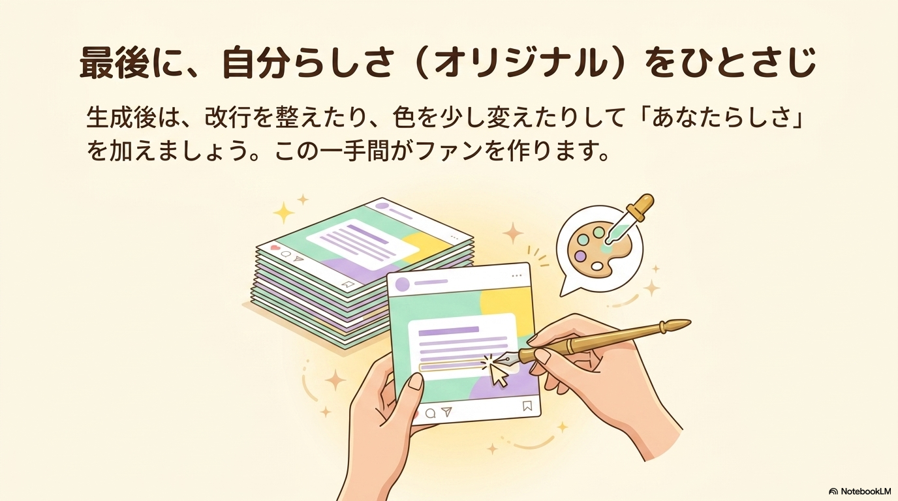
あとは自動生成された各スライドの文字溢れやレイアウトの微調整を行い、一括でダウンロードすれば、即座に何日分ものコンテンツ在庫が確保できます。このサイクルを回すことで、投稿作成の負担を大幅に軽減可能です。
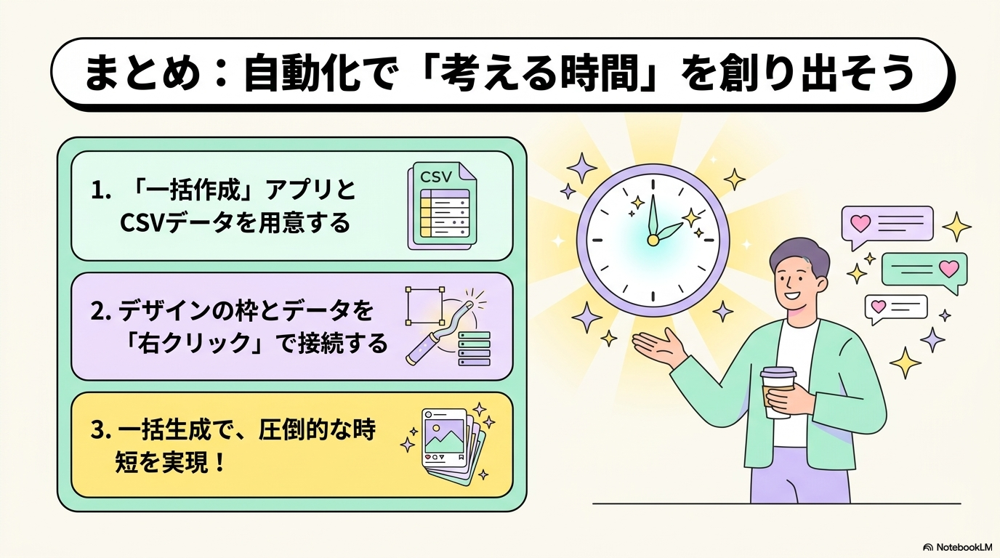
これまで私たちが使ってきたChatGPTやGeminiなどのAIは、人間が質問したことに対して答えてくれる「対話型AI」でした。これに対し、「自律型AIエージェント（Manus等）」は、人間が指示を1つ出すと、AI自身がブラウザの操作、Web検索、他アプリとの連携を自律的に繰り返してタスクを完遂する、全く新しいコンセプトのAIです。
人間が質問したことに答えてくれる「先生」型。ユーザーが都度細かい指示やプロンプトを入力し、出力をコピー＆ペーストして手動で次の作業へと進める必要があります。
指示を出すと自律して動く「秘書」型。AI自身が目的を達成するために必要なWeb検索、ブラウザ操作、ツール連携を自動で繰り返してタスクを完遂します。
Manusは、Meta社のパートナーシップ・グループ傘下に入ったことで、Meta公式のAPI連携（インスタコネクター）を搭載しています。
従来の非公式ツールで問題になりやすかった「ブラウザの非公式な自動操作によるアカウント凍結リスク」を最小限に抑え、公式の安全なルートを通じてInstagramアカウントと通信します。この公式API連携により、フィードやリールの投稿だけでなく、24時間で消えるストーリーの自動投稿も安全かつ確実に行うことができます。
Manusは、SNS運用における実務を人間の代わりに丸ごと代行します。
「競合他社のバズっているリールを分析して」「今日のテーマに沿った投稿文を3つ作って予約投稿して」など、まるで優秀なデジタル秘書に依頼するようにチャットで一言頼むだけで、裏側でブラウザを起動し、ログインから設定、投稿処理までを自動で進めてくれます。
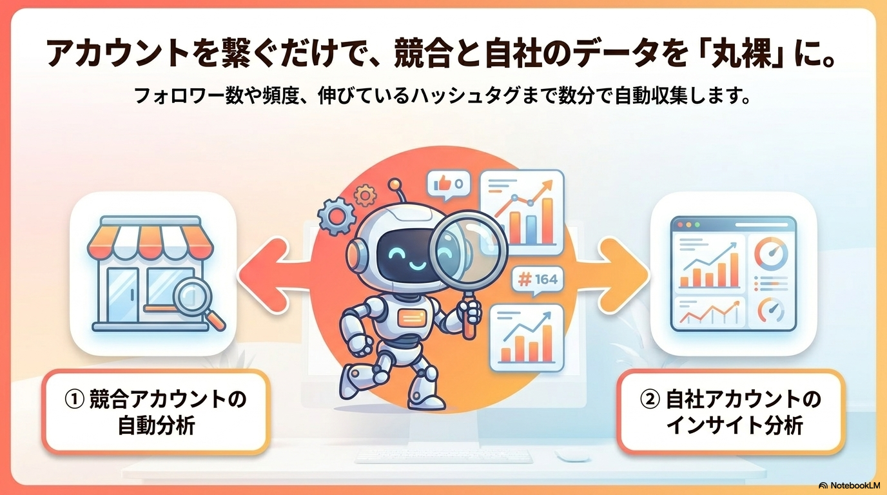
ManusをInstagramアカウントと連携させることで、主に以下の4つの運用業務を完全に自動化できます。
指定した競合（ライバル）アカウントのプロフィールURLやIDを入力するだけで、Manusが自動でそのアカウントの過去投稿を探索。いいね数、フォロワー数の推移、投稿頻度、リール動画の平均再生数、最もバズっているハッシュタグなどを自律的に収集・整理し、運用方針のレポートを自動で書き出します。
自身のアカウントをManusに連携することで、リーチ数、インプレッション数、フォロワーの属性データ、エンゲージメント率などをリアルタイムに取得。自律的にダッシュボードを作成するだけでなく、「どの投稿が最も伸びたか」「次はどのようなジャンルを攻めるべきか」といった具体的な改善アクションプランまで自動で提案します。
テーマや構成案に沿って、フィード投稿のデザイン案やキャプション、ハッシュタグの選定をAIが自動生成。連携されたInstagramアカウントに対して、投稿画像のアップロードや本文の入力を行い、そのまま自動投稿、あるいは日付・時間を指定した予約投稿までを完全に無人で代行します。
Instagram広告（Meta広告）の出稿アカウントと連携することで、配信中の広告のクリック率（CTR）、コンバージョン率、費用対効果（ROAS）を自動分析。どのクリエイティブ（画像・動画）が最も効率よく成果を出しているかを判別し、予算の最適化や入札戦略の微調整テストをAIが自動で実施します。
Manusは自律的に何でも処理できる非常に優秀なエージェントですが、現在の仕様では「画像生成（特に日本語の文字入れ画像）」を単体で行わせると、デザインのばらつきや日本語の激しい文字化けが発生し、日本国内での実用的な投稿画像としては使用に耐えません。
そこで、文字出力の美しさと安定性に優れ、日本語の文字化けを起こさない画像生成が得意な「Gemini」をワークフローの中間に組み合わせることで、完全に文字化けのない高品質なカルーセル画像を自動生成し、実用レベルの自動化ラインを構築します。
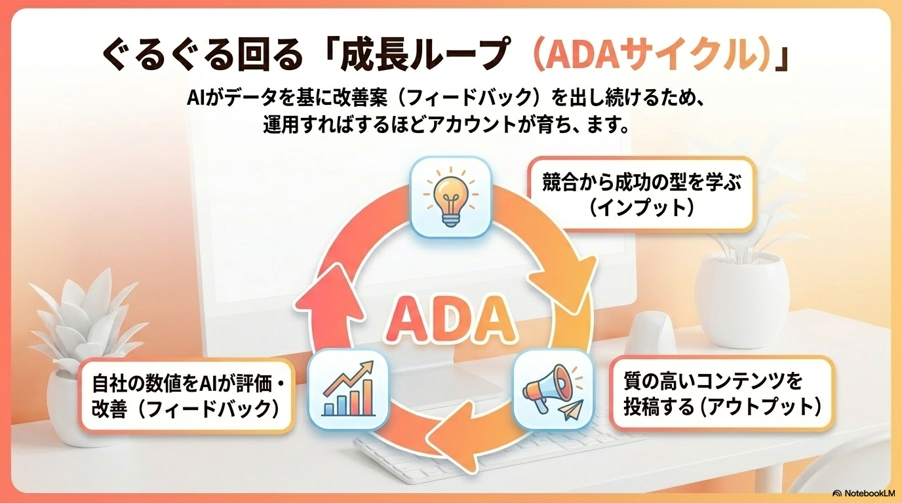
全体フローは以下の通りです。Manusが「市場調査・設計」と「自動投稿」という実務作業を担い、Geminiが「高品質なビジュアル（画像）の生成」を担当します。この2つのAIの強みをかけ算することで、高品質かつ完全に自動化されたSNS運用の仕組みが完成します。
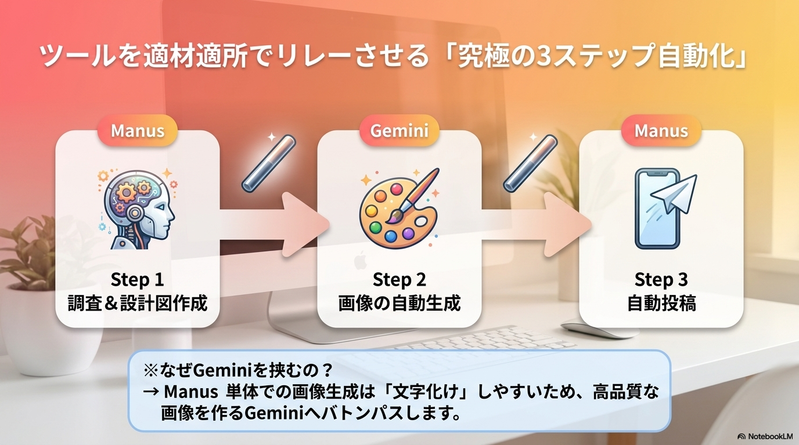
Manusにテーマを指示。市場・ライバル調査から「投稿コンセプト」と、それに紐付く「カルーセル3枚分の画像設計図（テキストでの指示文）」を作成させます。※ここではまだ画像は作らせません。
ManusがStep 1で出力した「画像設計図」をそのままコピーしてGeminiに渡します。このとき「Instagramのカルーセル投稿3枚分、以下の内容で作成してください。1枚ずつ高画質で出力してください」と指示して画像を個別に生成させます。
Geminiが生成した画像の共有URL（リンク）を3枚分取得し、Manusに戻します。「これらの画像リンクを使ってInstagramにカルーセル投稿してください」と頼むと、Manusが自動でInstagramにログインして投稿を行います。
Manusのチャット画面に指示を入力すると、AIは自律的に内蔵ブラウザを起動し、Instagramや競合サイトの調査（リアルタイムウェブ探索）を開始します。
数分の探索の後、現在バズっているトレンドを踏まえた「投稿コンセプト」と、Geminiへの入力用となる「3枚分の画像指示テキスト（プロンプト設計図）」を自動生成して出力します。人間は画面の前で待つだけで、プロ並みの企画書と画像構成案が手に入ります。
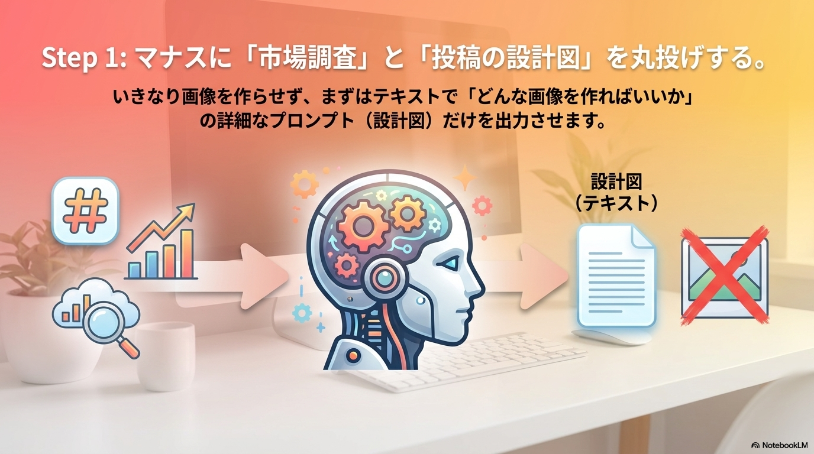
Manusが出力した画像設計図テキストをコピーし、Geminiにそのままペーストして実行します。
Geminiは文字入れやレイアウトを正確に行えるため、文字化けやレイアウト崩れのない、解像度の高いきれいなカルーセルスライド用画像を1枚ずつ生成してくれます。生成された画像を右クリックして「画像のアドレスをコピー」するか、Googleドライブに保存して共有リンクを作成し、次のステップの準備をします。
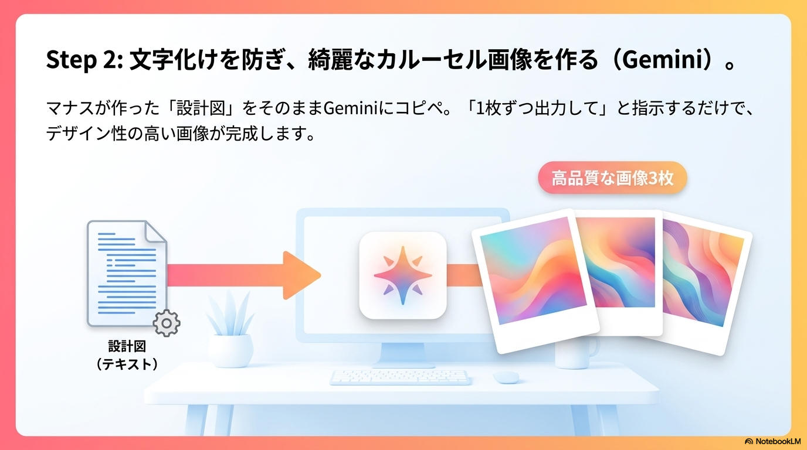
Geminiが生成した各画像の共有URLを3つ揃えて、再びManusのチャットUIに送信します。「これらの画像リンクを使ってInstagramにカルーセル投稿してください」と指示します。
無料版のManusを使用する場合、画像を直接アップロードすると添付枚数の上限（1枚）に引っかかることがあります。そのため、GoogleドライブやGeminiから取得した「画像の共有URLリンク」をManusに渡すことで、枚数制限を迂回してカルーセル投稿を実行させることができます。
投稿指示を受けたManusは、内蔵ブラウザを介してInstagramのウェブ版へ自動的にアクセスします。
あらかじめアプリ連携で認証された情報を使い、Instagramへのログイン、新規投稿作成画面の起動、指定された画像の貼り付け、ハッシュタグやキャプションテキストの流し込みなど、通常は人間がコピペで行う一連の手順を完全に自動で進めていきます。
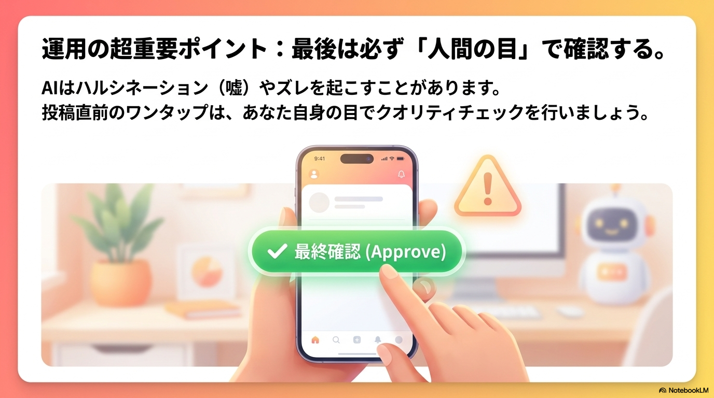
自動投稿の完了直前に、Manusの操作ブラウザ上で「今すぐ投稿を実行しますか？」という確認画面がポップアップし、AIが一時停止します。
これは、AIによる意図しない投稿を防ぐための重要な「人間の最終チェック（Human-in-the-loop）」機構です。ユーザー自身がブラウザ上のプレビューでキャプションや画像の配置を最終確認し、問題なければ画面上の「投稿」ボタンを1クリックします。
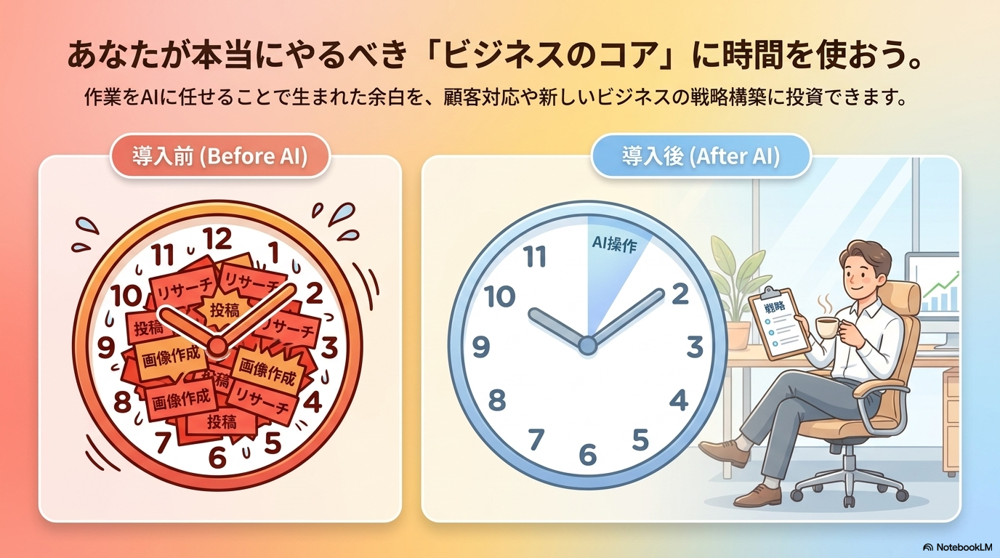
最終的にInstagram上に公開された結果を確認すると、キャプションやタグの記述は完璧で、Geminiを介したことによって画像の文字化けやレイアウトの乱れが一切ない美しいカルーセル投稿が完成していることがわかります。
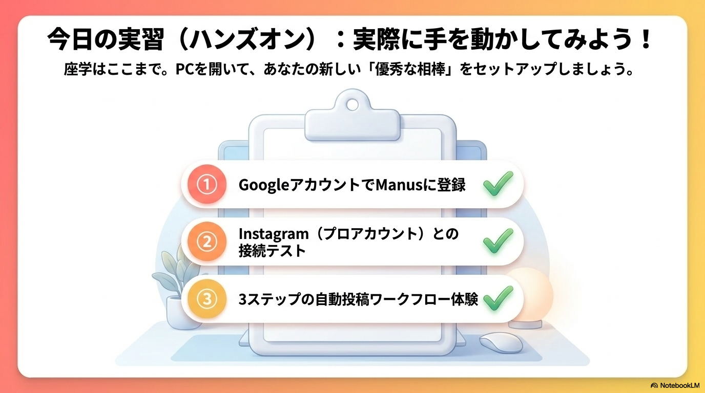
このManus×Gemini×Instagramの一気通貫フローを導入することで、これまで毎日1〜2時間以上かかっていた「企画立案 ➡ 競合リサーチ ➡ 画像デザイン ➡ 投稿文作成 ➡ Instagram手動アップロード」という一連の運用タスクが、「AIへの指示出し ➡ Gemini画像コピー ➡ 最終プレビューの1クリック確認」というわずか数分のアクションにまで圧縮されます。
この浮いた時間を、顧客とのやり取りや本質的なビジネス戦略に投資することで、運用の生産性を爆発的に高めることができます。
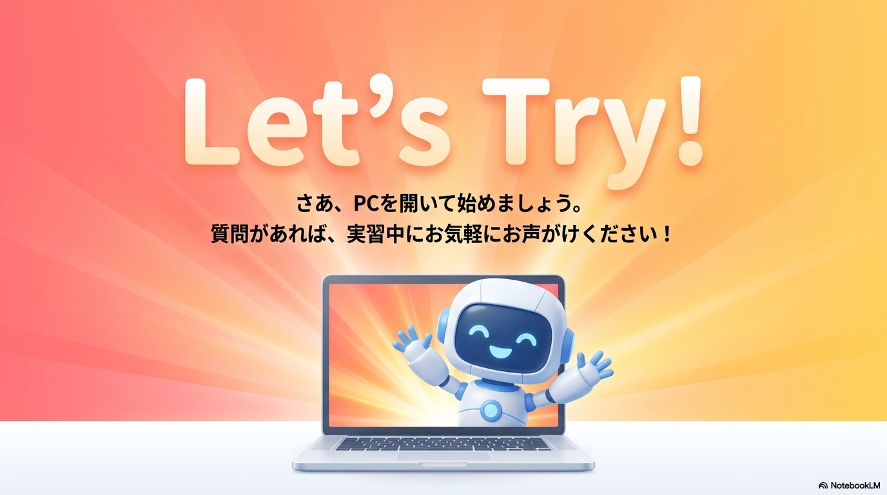
💡 実習の流れ：
Manusを登録し、Geminiと連携して自動投稿を試してみた感想や、新時代の自律型AIに触れて驚いた点、うまくいった部分、設定時に詰まった点などをメモしましょう。